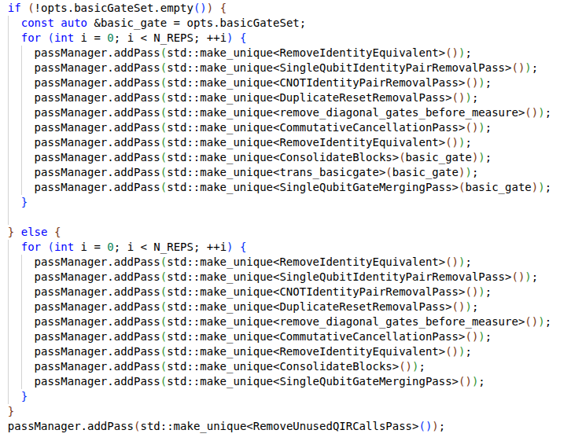
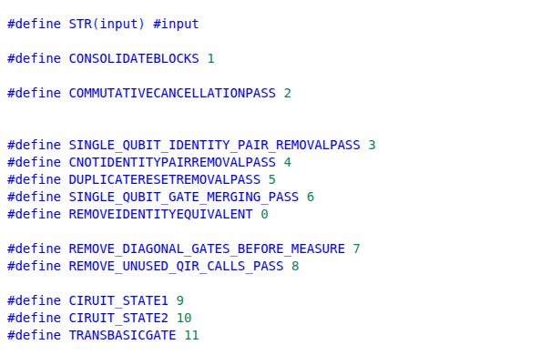
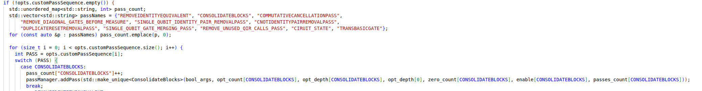
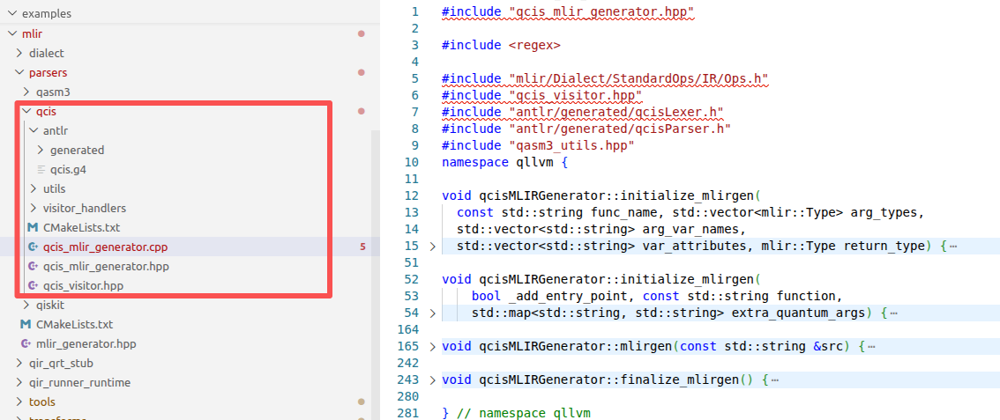
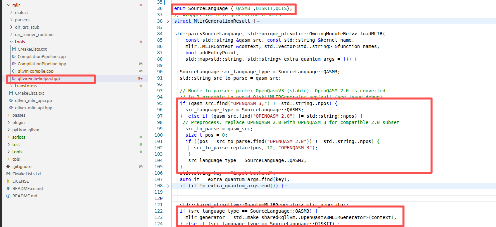
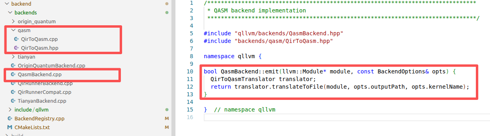
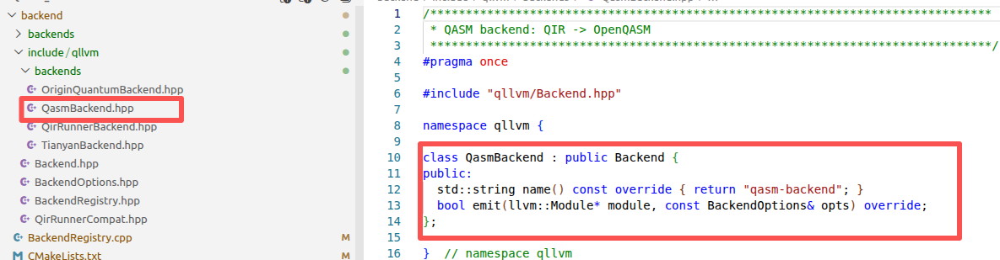
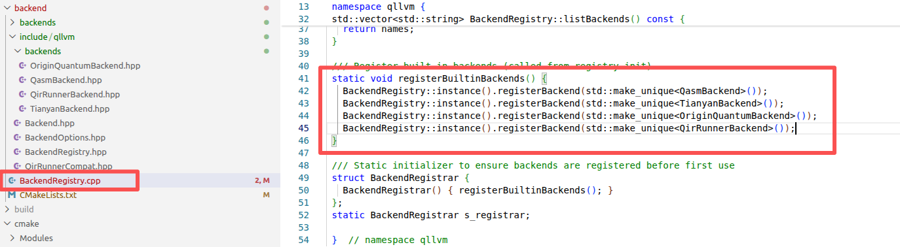

Contribution Guide
Thank you for your interest and support for the QLLVM project! We welcome contributions in various forms, including code, documentation, testing, issue reports, etc. This guide will help you understand how to contribute to the QLLVM project.
Code of Conduct
All contributors participating in the QLLVM project should adhere to the following code of conduct:
Respect others, maintain a friendly and professional attitude
Accept constructive criticism
Focus on the best interests of the community
Show empathy to other contributors
How to Contribute
Reporting Issues
If you find a bug or have a new feature suggestion, please submit an Issue on GitHub. When submitting an Issue, please provide the following information:
Detailed description of the issue
Steps to reproduce the issue
Expected behavior
Actual behavior
Environment information (operating system, Python version, QLLVM version, etc.)
Related error messages or logs
Contributing Code
Extension Development Guide
Before submitting code, please refer to the following development guides based on your contribution type.
Adding MLIR Optimization Pass
1. Create Pass Source Files
Add new optimization Pass source code under qllvm/mlir/transforms/optimizations/.
new.hpp Example
qllvm/mlir/transforms/optimizations/new.hpp1#pragma once 2#include "Quantum/QuantumOps.h" 3#include "mlir/Pass/Pass.h" 4#include "mlir/Pass/PassManager.h" 5#include "mlir/Target/LLVMIR.h" 6#include "mlir/Transforms/DialectConversion.h" 7#include "mlir/Transforms/Passes.h" 8#include <unordered_map> 9#include <tr1/unordered_map> 10#include <iostream> 11#include <unordered_set> 12 13using namespace mlir; 14 15namespace qllvm { 16struct new 17 : public PassWrapper<new, OperationPass<ModuleOp>> { 18 void getDependentDialects(DialectRegistry ®istry) const override; 19 void runOnOperation() final; 20 new() {}; 21 new(std::unordered_set<std::string> basicgate){ 22 basic_gate = basicgate; 23 } 24 new(std::map<std::string, bool> bool_args,int &opt_count, int &opt_depth, int &cir_depth, int &zero_count, int &enable, int &pass_count) { 25 if(bool_args.find("pass_effect") != bool_args.end()){ 26 printCountAndDepth = false; 27 p = &opt_count; 28 q = &opt_depth; 29 c_d = &cir_depth; 30 } 31 if(bool_args.find("syn_opt") != bool_args.end()||bool_args.find("customPassSequence") != bool_args.end()){ 32 syn = true; 33 o = &zero_count; 34 e = &enable; 35 c_d = &cir_depth; 36 } 37 if(bool_args.find("pass_count") != bool_args.end()){ 38 c = &pass_count; 39 f = true; 40 } 41 } 42 43 private: 44 bool printCountAndDepth = false; 45 bool syn = false; 46 bool f = false; 47 int *p = nullptr; 48 int *q = nullptr; 49 int *o = nullptr; 50 int *e = nullptr; 51 int *c = nullptr; 52 int *c_d = nullptr; 53 int before_gate_count = 0; 54 int before_circuit_depth = 0; 55 int after_gate_count = 0; 56 int after_circuit_depth = 0; 57 std::unordered_set<std::string> basic_gate; 58 std::vector<mlir::quantum::ValueSemanticsInstOp> top_op; 59 std::string passname = "new"; 60}; 61}
new.cpp Example
qllvm/mlir/transforms/optimizations/new.cpp1#include "new.hpp" 2#include "Quantum/QuantumOps.h" 3#include "mlir/Dialect/LLVMIR/LLVMDialect.h" 4#include "mlir/Dialect/StandardOps/IR/Ops.h" 5#include "mlir/IR/Matchers.h" 6#include "mlir/IR/PatternMatch.h" 7#include "mlir/Pass/Pass.h" 8#include "mlir/Pass/PassManager.h" 9#include "mlir/Target/LLVMIR.h" 10#include "mlir/Transforms/DialectConversion.h" 11#include "mlir/Transforms/Passes.h" 12 13namespace qllvm { 14using namespace std::complex_literals; 15 16void new::getDependentDialects(DialectRegistry ®istry) const { 17 registry.insert<LLVM::LLVMDialect>(); 18} 19 20void new::runOnOperation() { 21 22} 23}
2. Mount to PassManager
In qllvm/mlir/transforms/pass_manager.hpp, mount the new Pass to mlir::PassManager in the configureOptimizationPasses function.
The compiler supports two configuration methods:
Default order: Custom sequence based on
PassManagerOptions(e.g.,customPassSequence)Default enabled: Directly call
addPassin the default branchOptional enabled: Extend according to existing macros and
switchpatterns
Method 1: Default Enabled
Add in configureOptimizationPasses:
passManager.addPass(std::make_unique<new>());
{kind=link}

Method 2: Optional Enabled (via macros and switch)
Define macro: Add
#define NEW 12inpass_manager.hpp
{kind=link}

Add
"NEW"topassNamesAdd corresponding
casebranch in theforloop
{kind=link}

Adding Input Language Support
1. Implement Parser
Create language subdirectory under qllvm/mlir/parsers/:
Write ANTLR grammar file (
.g4) and generate lexer/parser codeImplement Visitor and
*_mlir_generatorto gradually lower AST to MLIRRefer to existing implementations:
qasm3/,qiskit/,qcis/
{kind=link}

2. Add Routing
Add routing in loadMLIR in qllvm/mlir/tools/qllvm-mlir-helper.hpp:
Extend
SourceLanguageenumSelect corresponding generation function by file content, extension, or invocation parameters
Return
OwningModuleRefand unifiedMlirGenerationResultsemantics
{kind=link}

Adding Backend Type
1. Implement Backend Logic
Implement the backend’s emit method (QIR to target representation conversion) in qllvm/backend/backends/, alongside existing backends like QasmBackend, TianyanBackend, etc.
{kind=link}

2. Declare Backend Class
Declare the corresponding backend class in qllvm/backend/include/qllvm/backends/.
{kind=link}

3. Register Backend
Register in registerBuiltinBackends() in qllvm/backend/BackendRegistry.cpp:
BackendRegistry::instance().registerBackend(
std::make_unique<YourBackend>());
{kind=link}

After registration, the implementation can be resolved by name at runtime.
Note
New files typically need to add compilation targets and link dependencies in relevant CMakeLists.txt.
Submitting Pull Request
After completing code modifications, follow these steps to submit your contribution.
Fork repository: Fork the QLLVM repository to your personal account on GitHub
Clone and create branch
git clone https://github.com/your-username/QLLVM.git cd qllvm git checkout -b feature/your-feature-name
Install development dependencies
pip install -e .[dev]
Make modifications and test
pytest
Commit and push
git add . git commit -m "Add feature: brief description" git push origin feature/your-feature-name
Create Pull Request: Create a PR on GitHub, clearly describing your changes, and wait for maintainers to review
Tip
Maintain consistent code style with the project
Add appropriate test cases
Use clear, standardized commit messages
Contributing Documentation
If you want to contribute documentation, please follow these steps:
Fork and clone the repository (same as code contribution steps 1-2)
Create a branch (same as code contribution step 3)
Install documentation dependencies
Install documentation building dependencies
pip install -e .[docs]
Modify documentation
Modify or add documentation content
Ensure consistent documentation style
Check if links are valid
Build documentation
Build documentation to ensure no errors
cd docs
make html
Commit changes (same as code contribution steps 7-9)
Contributing Tests
If you want to contribute tests, please follow these steps:
Fork and clone the repository (same as code contribution steps 1-2)
Create a branch (same as code contribution step 3)
Install test dependencies
Install test dependencies
Add tests
Add new test cases
Ensure tests cover new features or fixed bugs
Run tests
Run tests to ensure they pass
Commit changes (same as code contribution steps 7-9)
Code Style
The QLLVM project follows the following code style:
Python code: Follow PEP 8 guidelines - Use 4 spaces for indentation - Line length does not exceed 79 characters - Import order: standard library, third-party libraries, local modules - Use docstrings to document functions and classes
Documentation: Follow reStructuredText format - Use clear heading hierarchy - Code examples use correct syntax highlighting - Links use relative paths
Commit messages: Use clear commit messages - First line: short description (no more than 50 characters) - Empty line - Detailed description (if needed) - Reference related Issues (if any)
Communication Channels
GitHub Issues: For reporting issues and discussing features
GitHub Discussions: For discussing project-related topics
Mailing list: If there is a mailing list, please provide it here
Contributor Guide
If you are contributing to an open source project for the first time, the following resources may be helpful:
[How to Contribute to Open Source](https://opensource.guide/how-to-contribute/)
[First Contributions](https://firstcontributions.github.io/)
[GitHub Docs: Fork a repo](https://docs.github.com/en/get-started/quickstart/fork-a-repo)
All Pull Requests will go through code review. During the review process, you may need to make modifications based on review comments. Please be patient and open-minded, as code review is an important part of improving code quality.
By contributing code to the QLLVM project, you agree that your contributions will be released under the project’s license.
Acknowledgements
Thank you to all who have contributed to the QLLVM project! Your contributions are key to the project’s success.